ScottPlot Cookbook: Advanced Axis Features
⚠️ Documentation is version-specific: This page was generated forScottPlot 4.1.4-beta
Additional documentation and more version-specific cookbooks are on the ScottPlot Website
Advanced Grid Customization
Grid lines can be extensively customized using various configuration methods.var plt = new ScottPlot.Plot(600, 400);
// plot sample data
plt.AddSignal(DataGen.Sin(51));
plt.AddSignal(DataGen.Cos(51));
// advanced grid customizations are available by accessing Axes directly
plt.XAxis.MajorGrid(color: Color.FromArgb(100, Color.Black));
plt.XAxis.MinorGrid(enable: true, color: Color.FromArgb(20, Color.Black));
plt.YAxis.MajorGrid(lineWidth: 2, lineStyle: LineStyle.Dash, color: Color.Magenta);
plt.SaveFig("asis_gridAdvanced.png");
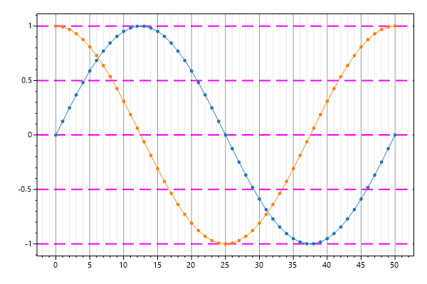
Numeric Format String
Tick labels can be converted to text using a custom format string.var plt = new ScottPlot.Plot(600, 400);
// plot sample data
plt.AddSignal(DataGen.Sin(51));
plt.AddSignal(DataGen.Cos(51));
// See https://tinyurl.com/y86clj9k to learn about numeric format strings
plt.XAxis.TickLabelFormat("E2", dateTimeFormat: false);
plt.YAxis.TickLabelFormat("P1", dateTimeFormat: false);
plt.SaveFig("ticks_numericFormatString.png");
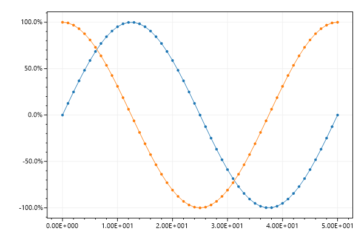
Manual Tick Labels
Tick positions and labels can be defined manually.var plt = new ScottPlot.Plot(600, 400);
// plot sample data
plt.AddSignal(DataGen.Sin(51));
plt.AddSignal(DataGen.Cos(51));
// manually define X axis tick positions and labels
double[] xPositions = { 7, 21, 37, 46 };
string[] xLabels = { "VII", "XXI", "XXXVII", "XLVI" };
plt.XAxis.ManualTickPositions(xPositions, xLabels);
// manually define Y axis tick positions and labels
double[] yPositions = { -1, 0, .5, 1 };
string[] yLabels = { "bottom", "center", "half", "top" };
plt.YAxis.ManualTickPositions(yPositions, yLabels);
plt.SaveFig("ticks_defined.png");
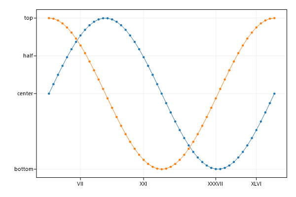
NonLinear Tick Spacing
Plot data on regular cartesian space then manually control axis labels to give the appearance of non-linear spacing between points.var plt = new ScottPlot.Plot(600, 400);
// these are our nonlinear data values we wish to plot
double[] amplitudes = { 23.9, 24.2, 24.3, 24.5, 25.3, 26.3, 27.6, 31.4, 33.7, 36,
38.4, 42, 43.5, 46.1, 48.8, 51.5, 53.2, 55, 56.9, 58.7, 60.6 };
double[] frequencies = { 50, 63, 80, 100, 125, 160, 200, 250, 315, 400, 500, 630,
800, 1000, 1250, 1600, 2000, 2500, 3150, 4000, 5000 };
// ignore the "real" X values and plot data at consecutive X values (0, 1, 2, 3...)
double[] positions = DataGen.Consecutive(frequencies.Length);
plt.AddScatter(positions, amplitudes);
// then define tick labels based on "real" X values, rotate them, and give them extra space
string[] labels = frequencies.Select(x => x.ToString()).ToArray();
plt.XAxis.ManualTickPositions(positions, labels);
plt.XAxis.TickLabelStyle(rotation: 45);
plt.XAxis.SetSizeLimit(min: 50); // extra space for rotated ticks
// apply axis labels, trigging a layout reset
plt.Title("Vibrational Coupling");
plt.YLabel("Amplitude (dB)");
plt.XLabel("Frequency (Hz)");
plt.SaveFig("ticks_nonLinearX.png");
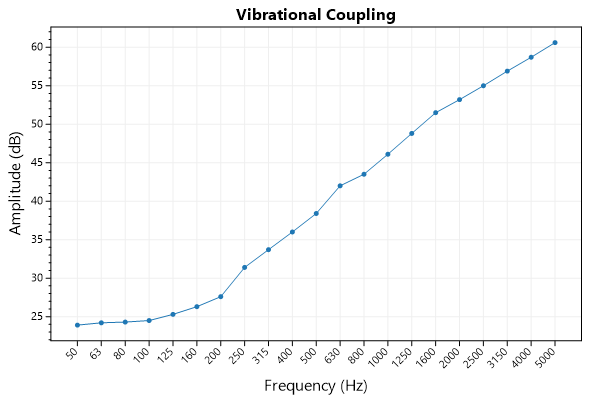
Descending Ticks
ScottPlot will always display data where X values ascend from left to right. To simulate an inverted axis (where numbers decrease from left to right) plot data in the negative space, then invert the sign of tick labels.var plt = new ScottPlot.Plot(600, 400);
// plot the positive data in the negative space
double[] values = DataGen.Sin(50);
var sig = plt.AddSignal(values);
sig.OffsetX = -50;
// then invert the sign of the axis tick labels
plt.XAxis.TickLabelNotation(invertSign: true);
plt.YAxis.TickLabelNotation(invertSign: true);
plt.SaveFig("ticks_descending.png");
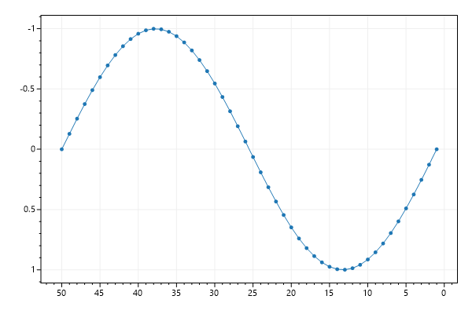
Defined Tick Spacing
The space between tick marks can be manually defined by setting the grid spacing.var plt = new ScottPlot.Plot(600, 400);
// plot the positive data in the negative space
double[] values = DataGen.Sin(50);
var sig = plt.AddSignal(values);
sig.OffsetX = -50;
// then invert the sign of the axis tick labels
plt.XAxis.ManualTickSpacing(2);
plt.YAxis.ManualTickSpacing(.1);
plt.SaveFig("ticks_definedSpacing.png");
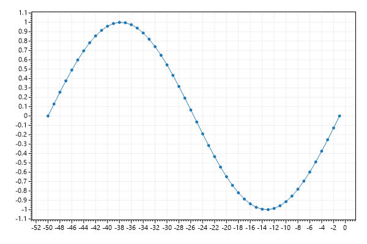
Tick Label Culture
Large numbers and dates are formatted differently for different cultures. Hungarian uses spaces to separate large numbers and periods to separate fields in dates.var plt = new ScottPlot.Plot(600, 400);
// generate some data
double[] price = DataGen.RandomWalk(null, 60 * 8, 10000);
DateTime start = new DateTime(2019, 08, 25, 8, 30, 00);
double pointsPerDay = 24 * 60;
// create the plot
var sig = plt.AddSignal(price, pointsPerDay);
sig.OffsetX = start.ToOADate();
// set the localization
var culture = System.Globalization.CultureInfo.CreateSpecificCulture("hu"); // Hungarian
plt.SetCulture(culture);
// further decorate the plot
plt.XAxis.DateTimeFormat(true);
plt.YAxis.Label("Price");
plt.XAxis.Label("Date and Time");
plt.XAxis2.Label("Hungarian Formatted DateTime Tick Labels");
plt.SaveFig("ticks_culture.png");
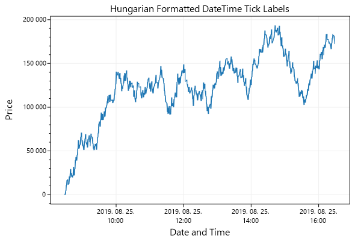
Custom Tick Label Culture
SetCulture() as arguments to let the user manually define formatting strings which will be used globally to change how numbers and dates are formatted.var plt = new ScottPlot.Plot(600, 400);
// generate 10 days of data
int pointCount = 10;
double[] values = DataGen.RandomWalk(null, pointCount);
double[] days = new double[pointCount];
DateTime day1 = new DateTime(1985, 09, 24);
for (int i = 0; i < days.Length; i++)
days[i] = day1.AddDays(1).AddDays(i).ToOADate();
// plot the data with custom tick format (https://tinyurl.com/ycwh45af)
plt.AddScatter(days, values);
plt.XAxis.TickLabelFormat("M\\/dd", dateTimeFormat: true);
plt.SaveFig("ticks_cultureCustom.png");
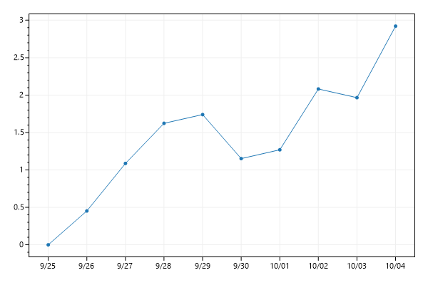
Multiplier Notation
Multiplier notation keeps tick labels small when plotting large data values.var plt = new ScottPlot.Plot(600, 400);
double[] largeXs = DataGen.Consecutive(100, spacing: 1e6);
double[] largeYs = DataGen.Random(null, 100, multiplier: 1e6);
plt.AddScatter(largeXs, largeYs);
plt.XAxis.TickLabelNotation(multiplier: true);
plt.SaveFig("ticks_multiplier.png");
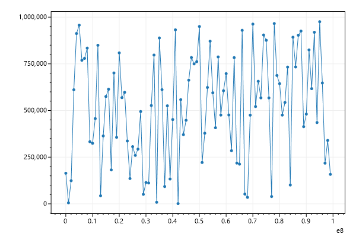
Offset Notation
Offset notation keeps tick labels small when plotting large data values that are close together.var plt = new ScottPlot.Plot(600, 400);
double[] largeXs = DataGen.Consecutive(100, spacing: 1e6);
double[] largeYs = DataGen.Random(null, 100, multiplier: 1e6);
plt.AddScatter(largeXs, largeYs);
plt.XAxis.TickLabelNotation(offset: true);
plt.SaveFig("ticks_offset.png");
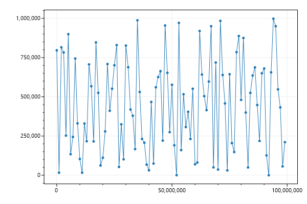
Defined DateTime Spacing
This example shows how to use a fixed inter-tick distance for a DateTime axisvar plt = new ScottPlot.Plot(600, 400);
// create a series of dates
int pointCount = 20;
double[] dates = new double[pointCount];
var firstDay = new DateTime(2020, 1, 22);
for (int i = 0; i < pointCount; i++)
dates[i] = firstDay.AddDays(i).ToOADate();
// simulate data for each date
double[] values = new double[pointCount];
Random rand = new Random(0);
for (int i = 1; i < pointCount; i++)
values[i] = values[i - 1] + rand.NextDouble();
plt.AddScatter(dates, values);
plt.XAxis.DateTimeFormat(true);
// define tick spacing as 1 day (every day will be shown)
plt.XAxis.ManualTickSpacing(1, ScottPlot.Ticks.DateTimeUnit.Day);
plt.XAxis.TickLabelStyle(rotation: 45);
// add some extra space for rotated ticks
plt.XAxis.SetSizeLimit(min: 50);
plt.SaveFig("ticks_definedDateTimeSpace.png");
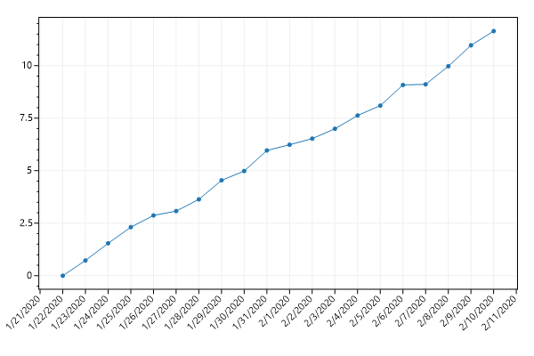
Log Scale
ScottPlot will only display data on a linear 2D plane, however you can log-transform data before plotting it to give the appearance of log scales. Customizing tick options for log-spaced minor ticks further improves appearance of these graphs.var plt = new ScottPlot.Plot(600, 400);
// generate some interesting log-distributed data
int pointCount = 200;
double[] dataXs = new double[pointCount];
double[] dataYs = new double[pointCount];
Random rand = new Random(0);
for (int i = 0; i < pointCount; i++)
{
double x = 10.0 * i / pointCount;
dataXs[i] = x;
dataYs[i] = Math.Pow(2, x) + rand.NextDouble() * i;
}
// this tool can convert linear data to log data
double[] dataYsLog = ScottPlot.Tools.Log10(dataYs);
plt.AddScatter(dataXs, dataYsLog, lineWidth: 0);
// place minor ticks to simulate a log scale
plt.YAxis.MinorLogScale(true);
// make minor grid lines visible for added effect
plt.YAxis.MinorGrid(enable: true, color: Color.FromArgb(10, Color.Black));
// decorate the plot
plt.Title("Data (Log Scale)");
plt.YLabel("Vertical Units (10^x)");
plt.XLabel("Horizontal Units");
plt.SaveFig("asis_log.png");
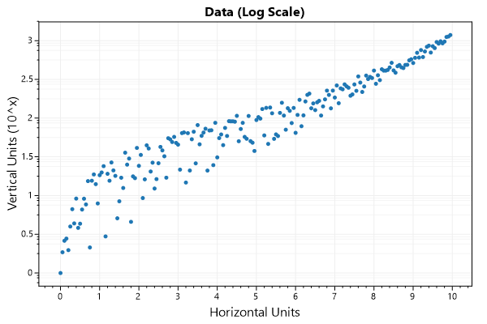
Ruler mode
Ruler mode is an alternative way to display axis ticks. It draws long ticks and offsets the tick labels to give the appearance of a ruler.var plt = new ScottPlot.Plot(600, 400);
plt.AddSignal(DataGen.Sin(51));
plt.AddSignal(DataGen.Cos(51));
plt.XAxis.RulerMode(true);
plt.YAxis.RulerMode(true);
plt.SaveFig("asis_ruler.png");
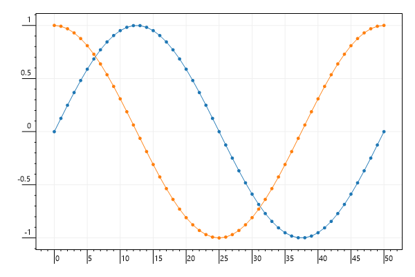
Polar Coordinates
A helper function converts radius and theta arrays into Cartesian coordinates suitable for plotting with traditioanl plot types.var plt = new ScottPlot.Plot(600, 400);
// create data with polar coordinates
int count = 400;
double step = 0.01;
double[] rs = new double[count];
double[] thetas = new double[count];
for (int i = 0; i < rs.Length; i++)
{
rs[i] = 1 + i * step;
thetas[i] = i * 2 * Math.PI * step;
}
// convert polar data to Cartesian data
(double[] xs, double[] ys) = ScottPlot.Tools.ConvertPolarCoordinates(rs, thetas);
// plot the Cartesian data
plt.AddScatter(xs, ys);
// decorate the plot
plt.Title("Scatter Plot of Polar Data");
plt.AxisScaleLock(true);
plt.SaveFig("asis_polar.png");
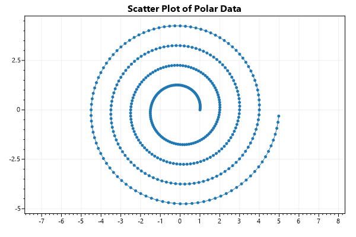